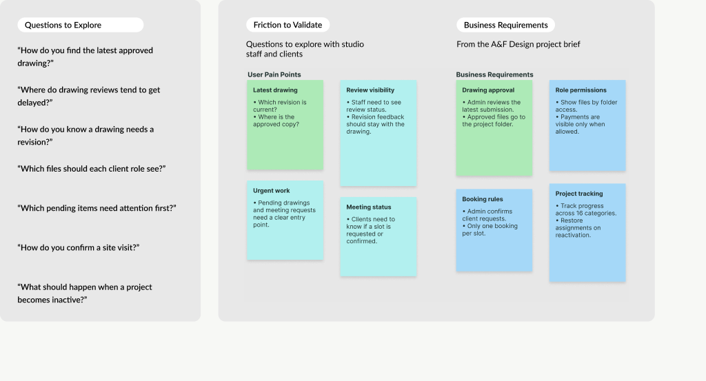
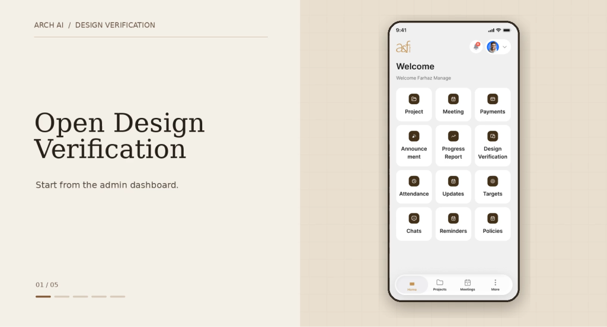
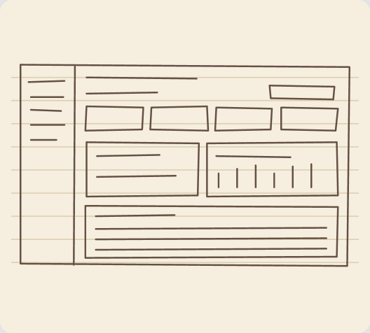
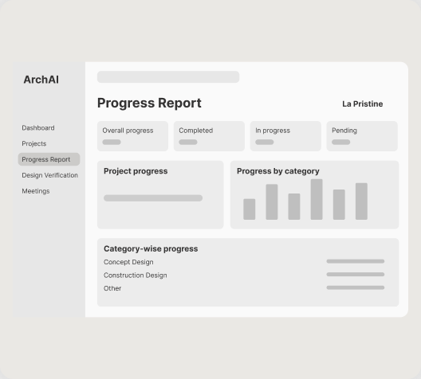
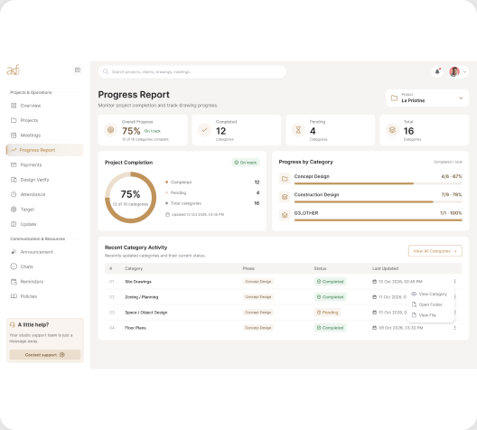
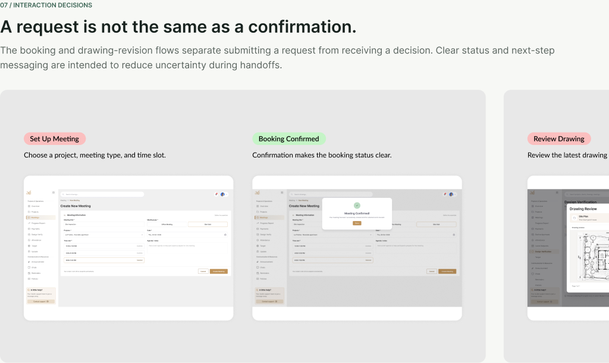
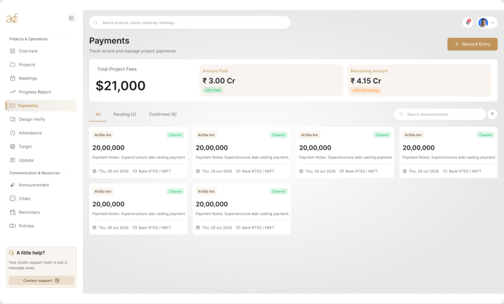
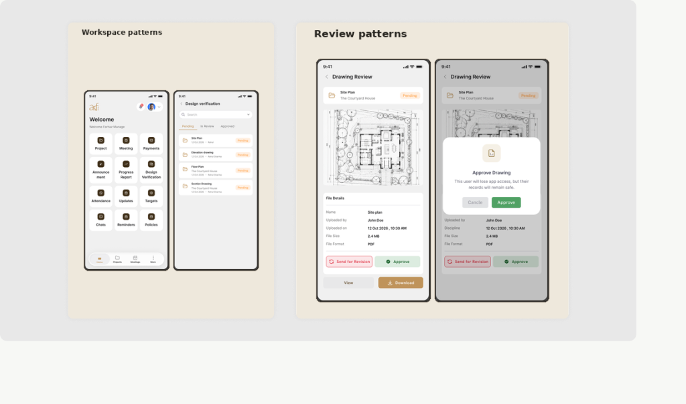
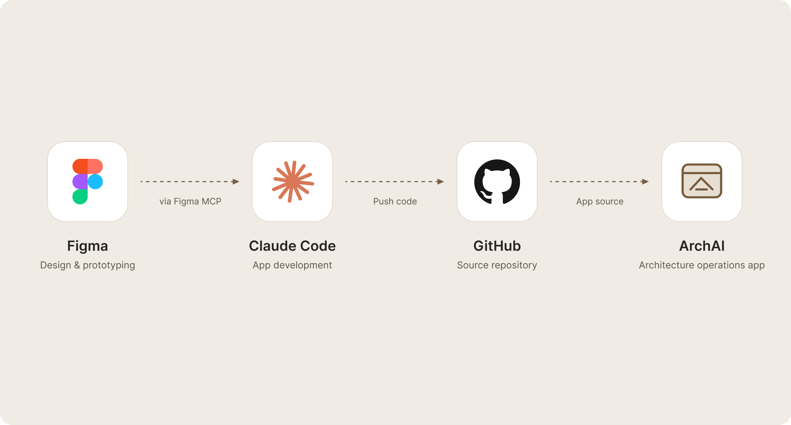

ProNex ArchAI
One shared workspace. A clear next step for every role.
From first design review to client sign-off, construction decisions rely on shared drawings, approvals, and site updates. ProNex ArchAI gives each role a single place to track what is moving and what is waiting.
ArchAI Interactive Prototype Demo — Click video to pause / resume
When work changes hands, the next action should not get lost.
Architecture projects rely on frequent handoffs. The challenge was to clarify what each person needs to do while protecting access to drawings, project files, and payments.
One project. Four different responsibilities.
Admins and staff run studio operations. Client Leaders and Client Viewers follow progress with different access levels. The interface needs to support those differences without creating four separate products.
Admin & Staff
Studio staff handle daily document uploads, revision reviews, and time tracking. Need unambiguous status tags and fast batch operations.
Client Leader & Viewer
External clients review milestones, approve drawings, and authorize payment releases. Require restricted, clean views without operational clutter.
Start with the handoff, not the dashboard.
I reviewed the brief and existing workflows to map when people act, wait for approval, or hand work to another role. This established the structure for the task flows.

Make pending work easier to recognise.
I reviewed dashboard hierarchy, repeated navigation, and inconsistent labels around drawing reviews, attendance, and payments. The design focus became clearer destinations and more explicit states.

Turn project progress into a readable hierarchy.
The La Pristine Progress Report moves from layout sketch to wireframe to final UI. The sequence shows how the information structure develops before the visual treatment.



Progress Report Sketch
Desktop Wireframe
Final Desktop UI
A request is not the same as a confirmation.
The booking and drawing-revision flows separate submitting a request from receiving a decision. Clear status and next-step messaging are intended to reduce uncertainty during handoffs.

Keep project fees and payment status together.
The Payments workspace brings fees and records into one view. Each record exposes its status, date, and payment method so admins can inspect the context before acting.

Consistency is part of the workflow.
Reusable project cards, tabs, drawing rows, status labels, and dialogs keep common actions consistent. Shared patterns help the experience scale across roles and platforms.

Carry the design decisions into implementation.
I used Figma MCP to bring the ArchAI screens and components into the development workflow and build the app. The handoff connects the interface design to the product being implemented.

The workflow is designed. Its effectiveness is the next test.
The work covers four role-based flows, desktop design, and a mobile prototype. These are delivered design outputs—not evidence of faster approvals or fewer errors. The next step is to test whether people can identify the latest drawing, complete a review, and recognise a confirmed meeting.
Prototype Outcomes
What to Validate Next
Proposed tasks and measures for a future usability test.
Ask an admin to find a pending site plan and approve it. Track whether they can identify the latest submission and complete the review.
Ask a Client Leader to request a site visit and explain how they would know the meeting was confirmed.